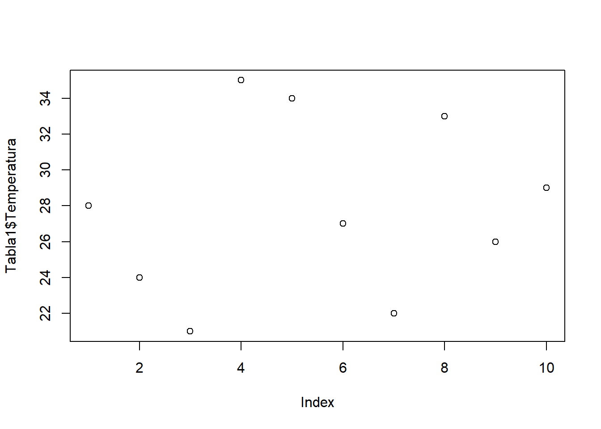
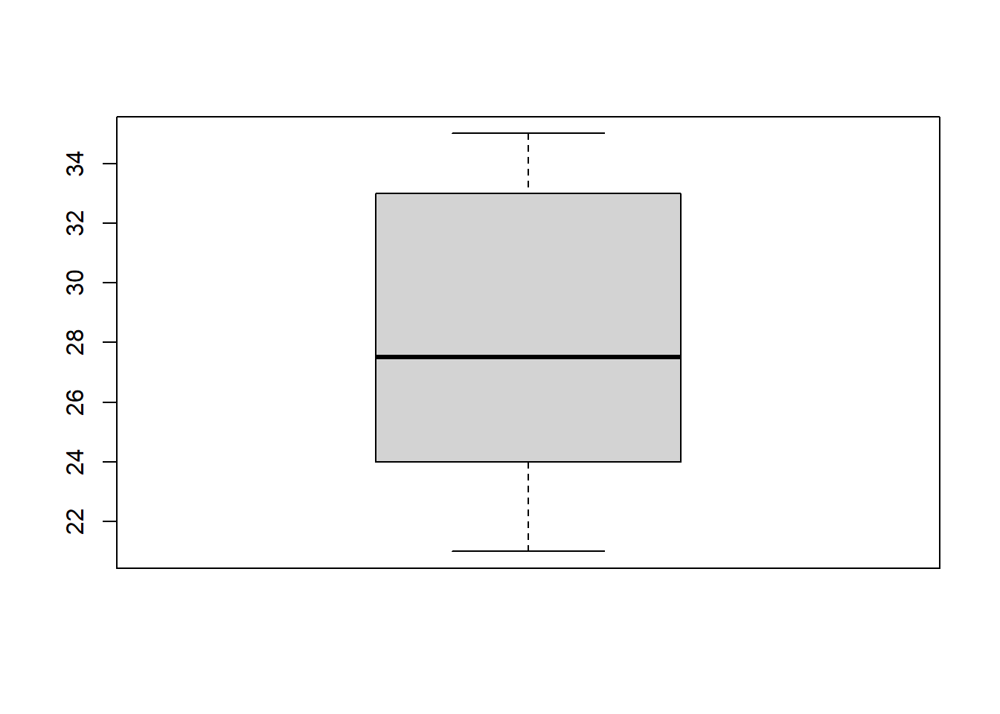
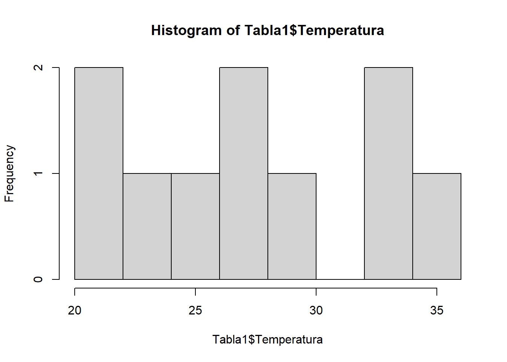

2 + 2[1] 4Bienvenidos a la clase 1
Para descargar e instalar R utilice el siguiente enlace R base
Para descargar e instalar RStudio utilice el siguiente enlace RStudio
Asegurece de que R base y R studio esten bien instalados antes de comenzar con el curso
2 + 2[1] 42 - 2[1] 02 * 2[1] 42 / 2[1] 1Observe que para la raíz cuadrada se utiliza el comando
sqrty el valor del que se quiere obtener la raíz cuadrada se coloca dentro de los paréntesis( ).
sqrt(2)[1] 1.414214Ahora que conocemos algunas de las operaciones básicas, podemos resolver algunos ejercicios.
Ejercicio 1
Utilizando la ecuación de regresión linear, para la cual la pendiente tiene un valor de 0.3 y el intercepto un valor de 34.5, resolver cuanto sería el valor de y si x vale 36.4.
y = intercepto + slope(x)
Solución:
34.5 + 0.3*36.4[1] 45.42Comencemos creando variables numéricas con un único valor
x <- 5 # En este caso, x tendrá el valor de 5y <- -3 # En este caso, y tendrá el valor de -3Si queremos crear variables numéricas con varios valores, tendremos que crear un vector utilizando el comando c(), en donde cada valor estará separa por coma.
Peso <- c(12.5, 23, 12.6, 18, 7, 18.3, 23, 40, 21,8)Observe que en este caso las comas se parados los valores, y los puntos solo se utilizan para las cifras decimales. La variable Peso tendrá 10 observaciones.
Otra forma de crear un vector es utilizando el signo : entre los valores del inicio y final.
Altura <- c(1:1000)En este caso la variable Altura tendrá 1000 observaciones
Ahora, ¿cómo podemos crear una variable con números aleatorios?, como podemos crear una variable con distribución normal?
Variable con numeros alatorios
Primero podríamos utilizar el comando sample() para crear números aleatorios sin una distribución en especifica, dando el número de inicio y final, y la cantidad de observaciones que deseamos.
Aleatorios <- sample(1:1000, size = 50)En este ejemplo observe que, 1 y 1000 es el rango entre el cual estarán 50 observaciones.
Variable con distribucion normal
Podemos crear variables con una distribución normal utilizando el comando rnorm(), en este caso tendremos que especificar la media y la desviación estándar.
Dnormal <- rnorm(50, mean = 30, sd = 2.5)Para este ejemplo, hemos creado 50 observaciones, con una media de 30 y una desviación estándar de 2.5
El siguiente paso es la creación de variables categorías, variables que incluyen categorias. Para crear una variable de categorías tendremos que colocar cada observación entre comillas " "
Variabley <- "y"En este ejemplo la variabley solo tiene la observación y. Si quermos más observaciones podemos utilizar el comando c().
Seccion <- c("1A", "1B", "3A", "2B", "2A", "3A")Ya que aprendimos como crear variables numéricas y categóricas, ahora podemos crear tablas. Para crear una tabla en R debemos de asegurar que nuestras variables presenten la misma cantidad de observaciones.
Creación de tabla con 10 observaciones
Primero crearemos nuestras variables
Temperatura <- sample(20:35, 10)
Riqueza <- rnorm(10, mean = 5, sd= 3)
Franja <- c("A", "A", "C", "C", "A", "B", "B", "B", "A", "C")Ahora utilizando el comando data.frame() podemos crear nuestra tabla
Tabla1 <- data.frame(Franja, Temperatura, Riqueza)Observemos nuestra primera tabla
| Franja | Temperatura | Riqueza |
|---|---|---|
| A | 28 | 2.091403 |
| A | 24 | 7.212274 |
| C | 21 | 6.915110 |
| C | 35 | 4.799230 |
| A | 34 | 4.027196 |
| B | 27 | 4.307882 |
| B | 22 | 7.925761 |
| B | 33 | 1.366127 |
| A | 26 | 4.736162 |
| C | 29 | 6.149988 |
Primero podemos hacer exploración rápido de nuestra primera tabla utilizando el comando summary()
Observe que cuando ejecutamos el comando summary() obtenemos la media, cuartiles, y algunos otros detalles de cada variable en nuestra tabla
summary(Tabla1) Franja Temperatura Riqueza
Length:10 Min. :21.0 Min. :1.366
Class :character 1st Qu.:24.5 1st Qu.:4.097
Mode :character Median :27.5 Median :4.768
Mean :27.9 Mean :4.953
3rd Qu.:32.0 3rd Qu.:6.724
Max. :35.0 Max. :7.926 Si nos interesa obtener solo la media podemos utilizar el comando mean(), para la desviación estándar usamos sd(), y para la mediana median().
mean(Tabla1$Temperatura)[1] 27.9median(Tabla1$Temperatura)[1] 27.5sd(Tabla1$Temperatura)[1] 4.909175Si nos interesa una gráfico exploratorio, podemos usar el comando plot() para una nube de puntos, boxplot() para un gráfico de cajas, y hist() para un histograma.
plot(Tabla1$Temperatura)
boxplot(Tabla1$Temperatura)
hist(Tabla1$Temperatura)
Para cargar una base de datos de nuestro pc, necesitamos sabe exactamente la ubicación de la base de datos. Por ejemplo para cargar la base de datos bird.sta que se encuentra en la carpeta data, de nuestro proyecto de R. Podemos usar el comando read.csv() ya que esta base de datos está delimitada por coma.
Ejemplo para cargar una base de datos
Aves.sta <- read.csv("data/bird.sta.csv")Observe que el nombre de la base de datos es bird.sta, el formato es .csv y se encuentra en la carpeta data, esta base de datos fue guardada en Aves.sta en nuestro ambiente en R
Para los siguientes ejemplos utilizaremos la base de datos penguins del paquete palmerpenguins
Cargar la base de datos penguins
Primero debemos cargar el paquete palmerpenguins
library(palmerpenguins)Una vez cargada el paquete podemos cargar a la base de datos penguins
data("penguins")Calcular la media de cada columna del data frame
sapply(penguins[, 3:6], mean, na.rm = TRUE) bill_length_mm bill_depth_mm flipper_length_mm body_mass_g
43.92193 17.15117 200.91520 4201.75439 Observe que que estamos seleccionando la columna 3 a la 6 (ya que contienen variables numericas), y el nar.rm = TRUE, es para que reconosca que existen NA en nuestra base de datos.
Calcular la media de la masa de los pingüinos para cada especie
tapply(penguins$body_mass_g, penguins$species, mean, na.rm =TRUE ) Adelie Chinstrap Gentoo
3700.662 3733.088 5076.016 Observe que que estamos seleccionando la columna body_mass_g para estimar la media condicionada por la variable species, el nar.rm = TRUE, es para que reconosca que existen NA en nuestra base de datos.